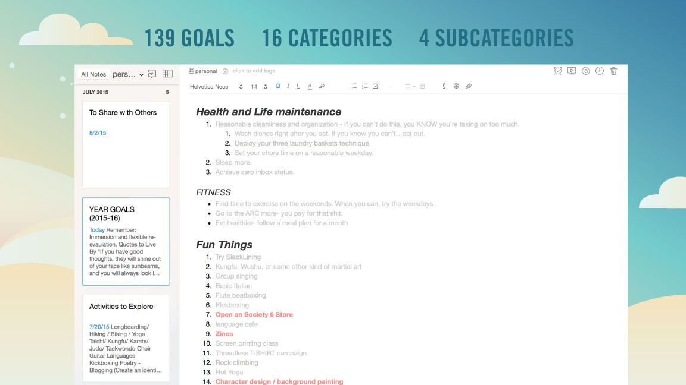
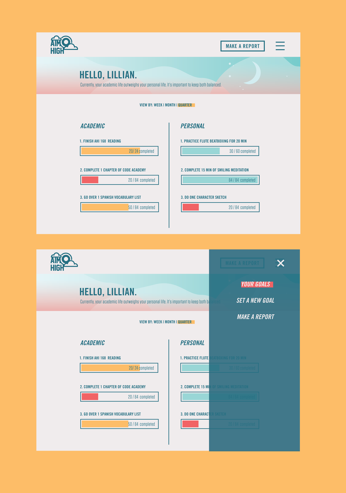

...However, my goals were not quantifiable and I wanted to change that.
Aim High
Don't Be Afraid to Set Your Goals High
AimHigh is a tool that will help students identify and keep track of their academic and personal goals.
It records progress though a one simple repetitive action that only requires one submission at the end of the day. Eventually, it will show progress as time elapses throughout a quarter. The goals are separated into two categories, academic and personal.
All goals are achievable and there is no goal that is too high to reach. The first step is to set them.
Aim High was created to solve a personal problem
At the beginning of every academic year I would try and visualize what the year would look like in terms of priorities and goals. The annual Evernote document covered anything from time management, to health, to friendships and relationships.

Features
The first step, setting the goal.
Users set goals under the categories of either ‘Personal’ or ‘Academic’. They are reminded that they should make their goals quantifiable within a day’s limit. For example, a personal goal would be something akin to, “Practice flute beatboxing for 20 minutes”.
Next, make daily reports.
The daily reports are daily. Academic goals and personal goals are color coded. Users click a simple, ‘yes’ or ‘no’ for each one. For the report sumary, abstract symbols confirm the success or failure of the day, but users are prompted by another screen (unshown here) to journal blockers for better performance the next day.

Most importantly, know how you're doing.
As daily reminder data stacks up, they are displayed on the main page, giving users a sense of whether or not their personal lives and academic lives are balanced. A toggling feature amongst the options, ‘week’, ‘month’, or ‘quarter’ allows the user to view progress in different ways.
The Process
Research
Since it takes 40 days to make or break a habit, the secret to productivity is something called the chain calendar. if you place a red x on a calendar for every day that you complete your goals, the chain will persuade you not to break them. Seeing consistency will motivate us to keep going. Data visualization helps pull together a vast amount of information and simplify it to tell a story.
Needfinding
I started looking into existing trackers such to try and understand human motivation. Some fo my findings were:
Some findings:
- The call to action of making a report was not clear
- The asleep and wake toggle function's use was not immediately clear
- Subjective preferences needed to be recorded for future use
Looking at the audience
The targeted users are undergraduate students. They have many different interests, but are generally connected by location and school affiliation.

Visual Development
AimHigh went through a few different visual styles through the prototypes. However, the general aim of it being approachable and friendly stayed the same. I brainstomed for words that invoked the images of altitude (e.g. climbing, clouds, space, sky, flying) and began moodboarding. I really wanted to focus on desirability, making the tool colorful and fun and to use.
Audience Testing
Some quotes that directed changes in prototypes:
- "What if I don’t want to count in days?”
- “I could see this being very useful for a very particular kind of personality”
- “ I can see myself getting discouraged very quickly”
- “What if I want to return to the home screen while I’m editing a goal?”
Watch a walkthrough of an earlier prototype here:
Final Thoughts
I'm trying to help people realize what they're capable of. There are so many times during our undergraduate years where students want to give up because the stress overwhelming. Eventually, it just takes good organization. While the endurance of the user is the limitation factor, AimHigh is not meant to drag users down, but to encourage.